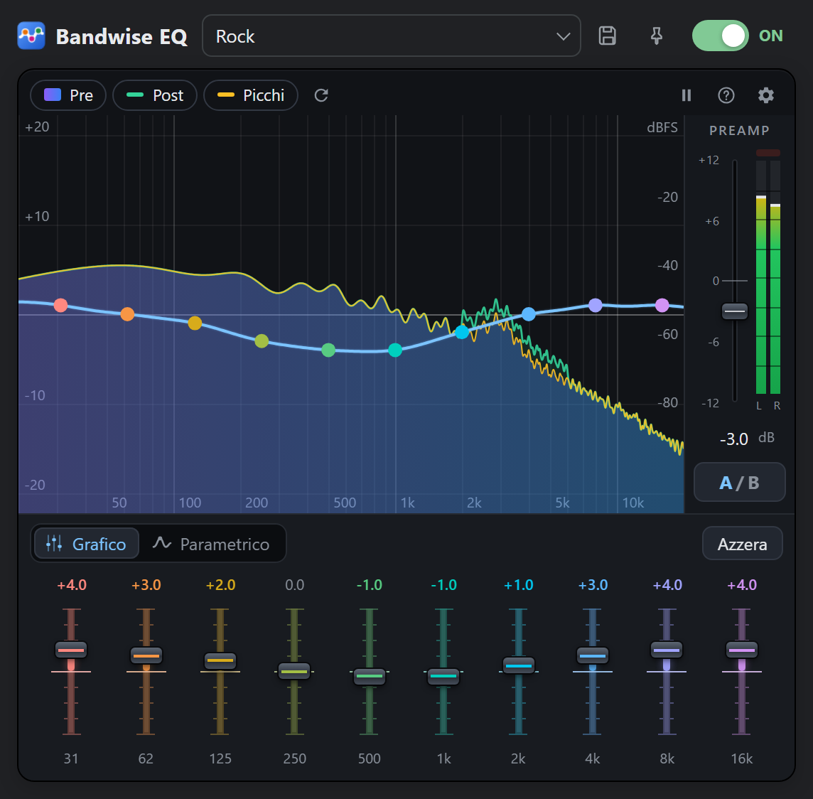
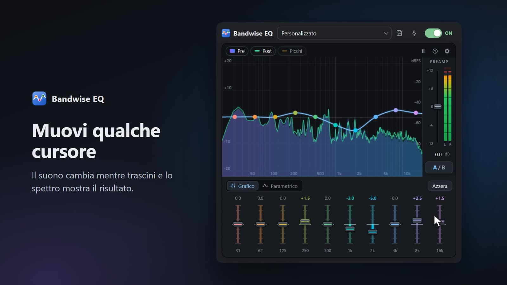
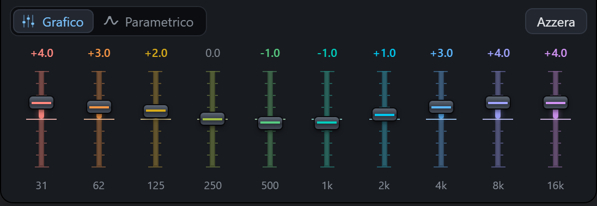
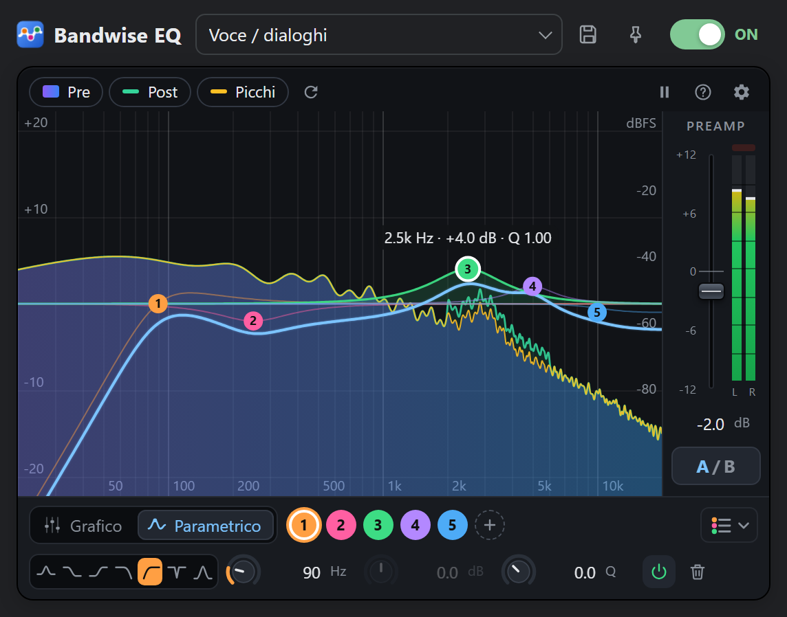
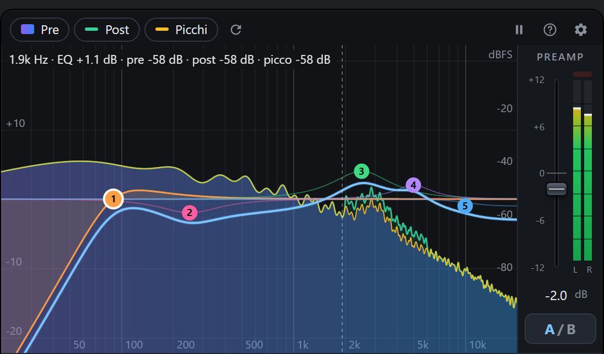
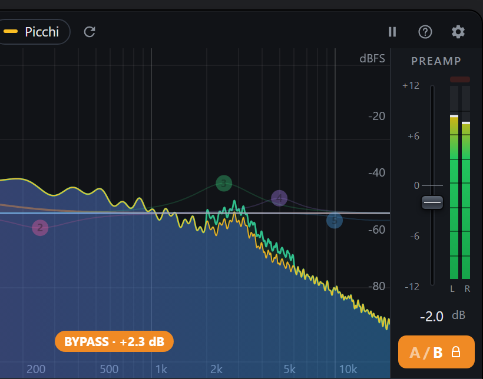
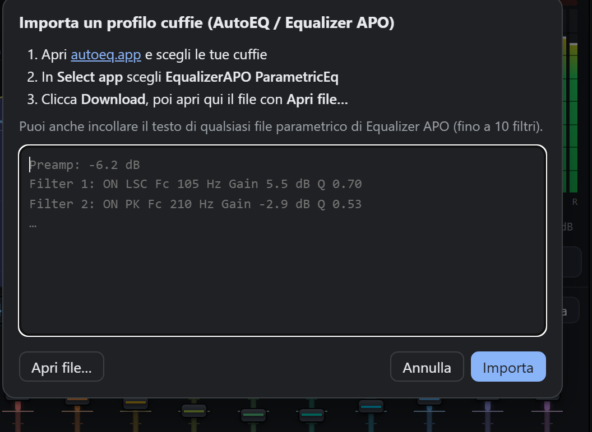

Un equalizzatore per le schede del browser.
Sistema l'audio di un video, di un podcast o di una canzone che suona in Chrome o in Edge. Muovi qualche cursore se ti basta, oppure entra nel dettaglio con un EQ parametrico e un analizzatore di spettro.
Un'estensione gratuita e open source per Chrome ed Edge. Nessun account, nessun tracciamento, nulla lascia il tuo computer.

Guardala in azione

Guarda il video dimostrativo (56 secondi)Prima usavo un'altra estensione per equalizzare, soprattutto su YouTube. Faceva il suo lavoro, ma ogni volta che la aprivo aveva dimenticato le impostazioni, e per farla funzionare dovevo tenere aperta una finestra separata.
Così ho scritto la mia. Bandwise EQ ricorda quello che imposti, per ogni scheda e, se vuoi, per ogni sito. La apri, regoli, la chiudi, e continua a lavorare in sottofondo. Strada facendo si è guadagnata anche un vero analizzatore di spettro, perché una frequenza si corregge molto meglio quando la vedi.
Un giro veloce
Tutto succede in una piccola finestra. Ecco a cosa serve ogni parte, con qualche prova da fare.
Comincia dai cursori
Dieci cursori, dai bassi profondi a 31 Hz fino a 16 kHz. Trascinali, oppure trascina i punti sul grafico. La curva passa esattamente per i valori che imposti, senza gobbe in mezzo.
Prova così: se le voci suonano ovattate, abbassa un po' i 250 Hz e alza i 2k. Se un video rimbomba, abbassa i 62 Hz.


Passa al parametrico per il lavoro di precisione
Fino a dieci bande, ognuna con la sua frequenza, il suo guadagno e la sua larghezza (Q), e sette tipi di filtro: campana, shelf, passa-alto, passa-basso, notch e passa-banda. Le due modalità modificano lo stesso EQ, quindi la curva ti segue quando cambi. Se passi dal parametrico ai cursori e torni indietro senza toccare nulla, ritrovi le bande originali.
Prova così: scrivi 2,5k in un campo frequenza, trascina una manopola in su o in giù, e tieni premuto Maiusc per i passi fini.


Guarda prima di girare una manopola
L'analizzatore mostra il suono prima e dopo l'EQ, con la memoria dei picchi se la vuoi. Passa il mouse sul grafico e ti dice la frequenza, quanto la modifica l'EQ e il livello del suono in quel punto.
Prova così: un ronzio in una registrazione si vede come un picco stretto, spesso a 50 o 60 Hz. Mettici sopra un filtro notch.


Confronta allo stesso volume
Tieni premuto il pulsante A/B per sentire il suono originale. Quello più forte sembra quasi sempre migliore, e questo rende i confronti ingannevoli: per questo Bandwise riproduce l'originale alla stessa loudness del tuo EQ. L'etichetta arancione ti dice di quanto ha compensato. Con Maiusc+clic il bypass resta attivo.


Porta il profilo delle tue cuffie
AutoEQ pubblica curve di correzione per migliaia di cuffie. Scegli le tue su autoeq.app, seleziona EqualizerAPO ParametricEq come app, scarica il file e aprilo dal menu dei preset con Importa profilo cuffie. Salvalo come preset e lo ritrovi ogni volta che ti serve.


Per cominciare
- Installa Bandwise EQ dal Chrome Web Store o da Microsoft Edge Add-ons.
- Fai partire qualcosa in una scheda: un video, una canzone, un podcast.
- Clicca l'icona di Bandwise EQ nella barra degli strumenti e accendila.
- Regola il suono. Puoi chiudere il popup quando vuoi: l'EQ continua a funzionare finché non lo spegni o chiudi la scheda.
Domande
Perché il browser dice che la scheda viene catturata?
È il modo in cui il browser permette a un'estensione di lavorare sull'audio di una scheda: le passa il suono e mostra un indicatore perché tu lo sappia. Bandwise elabora l'audio sul tuo computer e lo riproduce subito. Niente viene registrato o inviato da nessuna parte.
Funziona su tutti i siti?
Funziona su qualsiasi normale pagina web che riproduce suoni. Le pagine interne del browser (come le impostazioni o lo store delle estensioni) non possono essere elaborate, e alcuni servizi di streaming protetti da DRM potrebbero non permetterlo.
Posso usare impostazioni diverse in schede diverse?
Sì. Ogni scheda tiene le sue impostazioni finché non la chiudi. Se vuoi che un sito suoni sempre in un certo modo, apri il popup su quel sito e clicca la puntina accanto al menu dei preset.
Quale opzione devo scegliere su autoeq.app?
EqualizerAPO ParametricEq. Produce dieci filtri, esattamente quelli che Bandwise supporta, in un formato che legge direttamente.
Perché al massimo dieci bande?
Dieci bande bastano per quasi ogni correzione, stanno comode in un popup piccolo e corrispondono ai dieci filtri che AutoEQ usa per i profili delle cuffie.
È davvero gratuita? E i miei dati?
È gratuita e open source, con licenza GPL-3.0. Non accede alla rete, non raccoglie nulla, non mostra pubblicità e non legge le pagine che visiti. I dettagli sono nell'informativa sulla privacy, e il codice è su GitHub se vuoi controllare.
Ho trovato un bug o ho un'idea
Apri una segnalazione su GitHub, anche in italiano. Le segnalazioni di bug con il sito dove è successo sono particolarmente utili.